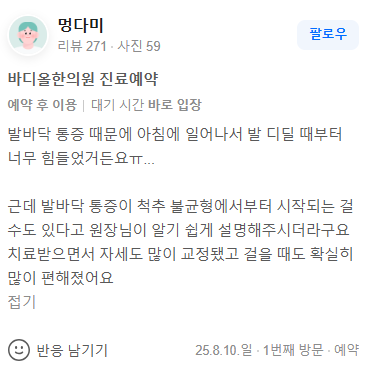

치료 증례 (실제 환자 영수증 리뷰 원문)
"발바닥 통증 때문에 아침에 일어나서 발 디딜 때부터 너무 힘들었거든요ㅠㅠ... 근데 발바닥 통증이 척추 불균형에서부터 시작되는 걸 수도 있다고 원장님이 알기 쉽게 설명해주시더라구요 치료받으면서 자세도 많이 교정됐고 걸을 때도 확실히 많이 편해졌어요"

1. 대증치료의 한계: 발바닥 자체에 체외충격파를 쏘거나 소염진통제 주사를 맞아도, 몸의 무게중심이 앞으로 쏠려 있다면 족저근막은 계속 찢어질 수밖에 없습니다.
2. 발바닥 통증과 척추의 연관성: 골반의 부정렬과 요추의 변위는 전체적인 운동역학적 사슬(Kinetic Chain)을 무너뜨려 한쪽 발바닥에 비정상적인 과부하를 집중시킵니다.
3. 최종 해결책(Last Resort): 바디올 SART 공간교정은 무너진 척추 축과 골반 수평을 원천 복원하여, 발바닥에 가해지는 수직 압박 벡터를 근본적으로 소멸시킵니다.
많은 환자들이 발바닥 통증(족저근막염)이 발생하면 발 내부의 문제로만 생각하고 정형외과에서 소염제 주사를 맞거나 체외충격파 치료를 반복합니다. 하지만 치료할 때만 반짝 편해질 뿐, 아침에 일어나 침대 밑으로 첫발을 디딜 때 찌르는 듯한 날카로운 통증은 좀처럼 사라지지 않습니다.
이유는 간단합니다. 상체의 무게중심을 지탱하는 요추와 골반 정렬이 무너져 체중 중심선(Line of gravity)이 전방 혹은 한쪽으로 치우쳐 있기 때문입니다. 골반이 틀어지면 걸을 때마다 완충 작용이 정상적으로 이루어지지 않아, 그 하중이 고스란히 발바닥 아치와 족저근막에 가해져 미세 파열을 만성적으로 유발하게 됩니다. 즉, 발바닥은 피해자일 뿐, 진짜 가해자는 상부의 무너진 척추 구조입니다.
주변의 일반적인 365일 야간진료 한의원이나 정형외과 도수치료는 종아리 근육(비복근, 가자미근)을 마사지하거나 근막을 이완하는 데 그칩니다. 반면 영통, 광교 등지에서 굳이 인계동 바디올한의원까지 찾아오시는 난치성 환자분들은 바디올 고유의 구조 복원력에 주목합니다.
바디올의 SART 척추정렬회복술(공간척추정형술)은 발바닥 통증을 국소적인 손상으로 보지 않고, '골반-요추-고관절-족부'로 이어지는 전체 정렬의 구조적 붕괴를 바로잡는 프리미엄 솔루션입니다. 특수 교정 도구를 사용하여 완강하게 잠겨 있는 엉치엉덩관절(천장관절)과 요추의 유착 공간을 열어주고 정렬을 바로잡습니다. 몸의 주춧돌인 골반이 수평을 회복하면 양측 하지로 분산되는 체중 부하가 황금 비율을 되찾게 되며, 족저근막에 가해지던 비정상적인 인장력이 사라져 발바닥 통증이 자연스럽게 완치됩니다.
변위된 골반과 고관절의 각도를 정밀 교정하여 신체의 물리적 무게중심을 중앙으로 되돌립니다. 이를 통해 걸을 때마다 발바닥 족저근막에 집중되던 수직 압박 벡터를 근본적으로 차단합니다.
발바닥 아치의 만성 염증 부위에 천연 성분의 약침을 정밀 주입하여 스테로이드 부작용 없이 통증을 제어하며, 척추와 하지 인대의 탄성을 회복시키는 1:1 맞춤 치료를 시행합니다.
발바닥만 치료해서는 낫지 않습니다. 신체 최상부의 구조를 바꾸는 최종 해결책, 바디올에서 시작하세요.
수원시청역 9번 출구 인계동한의원 | 평일 밤 8시 30분까지 야간진료